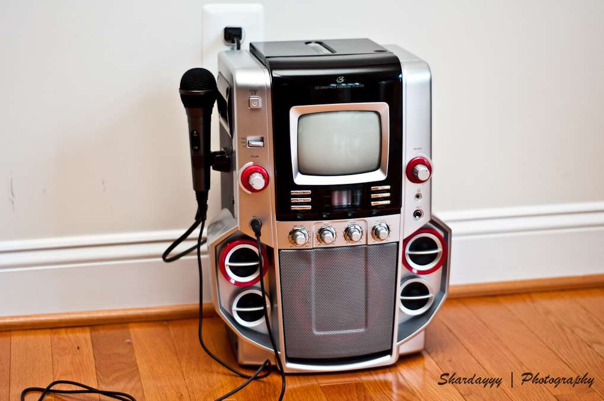

Deep Learning for Music Separation
Inria and LIRMM, Montpellier
✉️ fabian-robert.stoter@inria.fr

Music Unmixing/Separation
Applications

Time frequency representations
Mixture spectrogram
Vocals spectrogram
Drums spectrogram
Bass spectrogram
DNN-based Separation
DNN-based Separation

DNN-based Separation

DNN-based Separation

The pytorch
Open-unmix (UMX) modelThe pytorch
Open-unmix (UMX) model
F. Stöter et al, "Open-Unmix - A reference implementation for audio source separation", JOSS 2019.
Training Dataset: MUSDB18
MUSDB18) and uncompressed WAV MUSDB18-HQ

Music separation datasets
Name
Year
Reference
#Tracks
Tracks dur (s)
Full/stereo?
Total length
MASS
2008
(Vinyes)
9
(16
7)
❌ / ✔️
2m24s
MIR-1K
2010
(Hsu)
1,000
8
❌ / ❌
2h13m20s
QUASI
2011
(Liutkus et al.)
5
(206
21)
✔️ / ✔️
17m10s
ccMixter
2014
(Liutkus et al)
50
(231
77)
✔️ / ✔️
3h12m30s
MedleyDB
2014
(Bittner et al)
63
(206
121)
✔️ / ✔️
3h36m18s
iKala
2015
(Chan et al)
206
30
❌ / ❌
1h43m
DSD100
2015
(Ono et al)
100
(251
60)
✔️ / ✔️
6h58m20s
MUSDB18
2017
(Rafii et al)
150
(236
95)
✔️ / ✔️
9h50m
INTERNAL
2019
✔️ / ✔️
500h
Open-unmix: state-of-the-art for music demixing